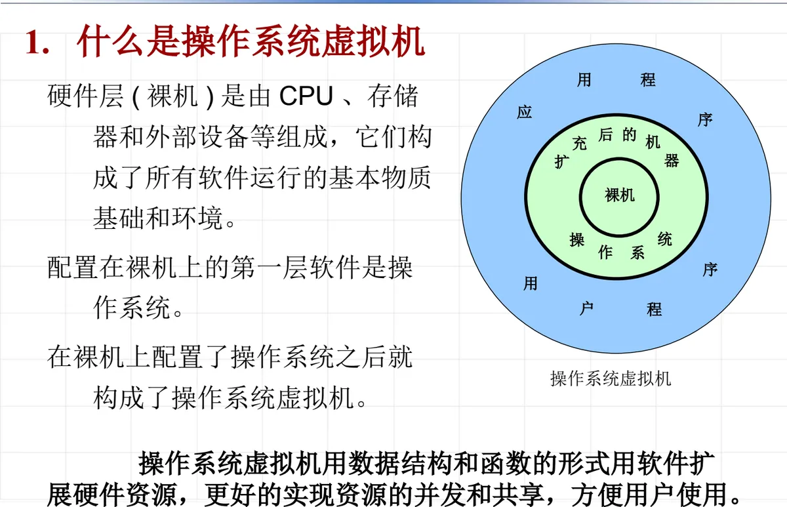
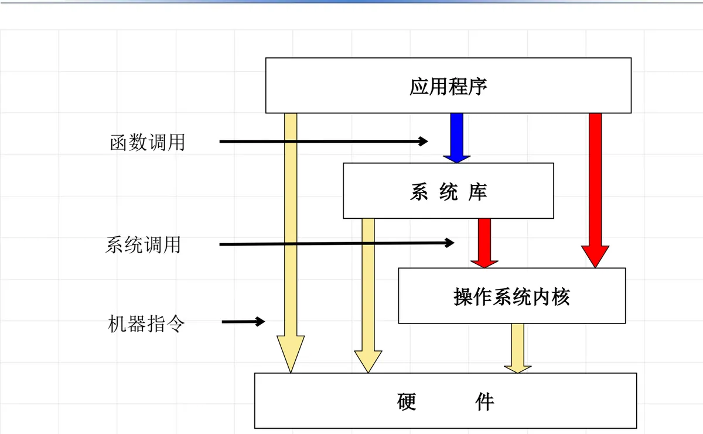

操作系统原理 · 第 2 章 结构与硬件支持
2.1 操作系统虚拟机
第 2 章从「结构」和「硬件支持」两个角度继续解剖操作系统。这一节先给出全章的总纲——操作系统虚拟机：为什么需要这样一个概念、它到底是什么、以及它对外提供了哪两套指令。理解了「裸机之上多出来的一台机器」这个视角，后面讲组织结构、特权级和中断才有统一的目标。
1. 为什么引入虚拟机的概念
引入虚拟机概念的直接动因，来自多用户环境下的一组现实矛盾：
- 共享与竞争：多个用户程序要共享和竞争计算机的软、硬资源，但每个用户程序都希望自己是独自使用整个计算机系统，不会去考虑其他用户进程的并行。用「虚拟」的概念，可以有效地实现资源共享——让每个用户都以为自己独占着一套资源；
- 硬件千差万别：需要屏蔽不同硬件的差别，提供一致的用户操作接口；
- 用户需求丰富：用户提出的要求是多方面的，需要的功能是丰富的，而很多复杂的功能都可以用软件来完成，从而扩充硬件的基本功能。
三条合起来指向同一个结论：在裸机之上，需要有一层软件把有限的物理资源「变多、变好、变一致」，这层软件就是操作系统，而它给用户呈现出来的那台机器，就是操作系统虚拟机。
2. 什么是操作系统虚拟机
硬件层（裸机）由 CPU、存储器和外部设备等组成，它们构成了所有软件运行的基本物质基础和环境。配置在裸机上的第一层软件是操作系统；在裸机上配置了操作系统之后，就构成了操作系统虚拟机。

它的实现手段是「用数据结构和函数的形式，用软件扩展硬件资源」，目的是更好地实现资源的并发和共享，方便用户使用。也就是说，操作系统虚拟机的功能并不是靠增加硬件得来的，而是靠操作系统内部的数据结构和函数调用「造」出来的。
3. 操作系统虚拟机的指令系统
从程序的角度看，一台机器就是「一套可以使用的指令」。据此，操作系统虚拟机的指令系统分两部分：
- 裸机原有的硬件指令系统：CPU 直接执行的那套机器指令，由硬件提供；
- 操作系统虚拟机扩充的指令系统：在硬件指令之上由操作系统新增的一层，又分成两类接口——操作命令（又称命令接口）和系统功能调用（又称程序接口）。
这两类接口的落脚点不同：
- 操作命令（命令接口）面向使用计算机的人，包括键盘命令、作业控制语言（shell）和图形化用户界面（GUI）；
- 系统功能调用（程序接口）面向程序，包括系统函数和系统调用——应用程序不再直接写机器指令，而是通过调用系统函数、发起系统调用来请求操作系统的服务。

图 2 正好把这两种接口串成一条链路：应用程序用函数调用使用系统库，系统库用系统调用进入操作系统内核，内核再以机器指令操作硬件。用户看到的「扩充指令」在最上层，硬件真正认识的机器指令在最下层，中间由操作系统衔接。第 3 章「用户接口」会详细展开这两类接口。
本节小结
- 引入虚拟机概念的目的是：让每个用户程序都以为自己独占整个计算机系统，从而有效地实现资源共享；屏蔽不同硬件的差别，提供一致的用户操作接口；用软件扩充硬件的基本功能，满足用户多方面、丰富的功能需求；
- 裸机（CPU、存储器、外部设备）构成软件运行的基本环境，配置在裸机上的第一层软件是操作系统，裸机加操作系统就构成操作系统虚拟机（也称扩充机器）；
- 操作系统虚拟机用数据结构和函数的形式，以软件扩展硬件资源，更好地实现资源的并发与共享；
- 虚拟机的指令系统包含裸机原有的硬件指令系统，以及操作系统扩充的两类指令：操作命令（命令接口：键盘命令、作业控制语言 shell、图形化用户界面 GUI）与系统功能调用（程序接口：系统函数与系统调用）；
- 从应用程序到硬件的调用链是：应用程序 →（函数调用）系统库 →（系统调用）操作系统内核 →（机器指令）硬件。